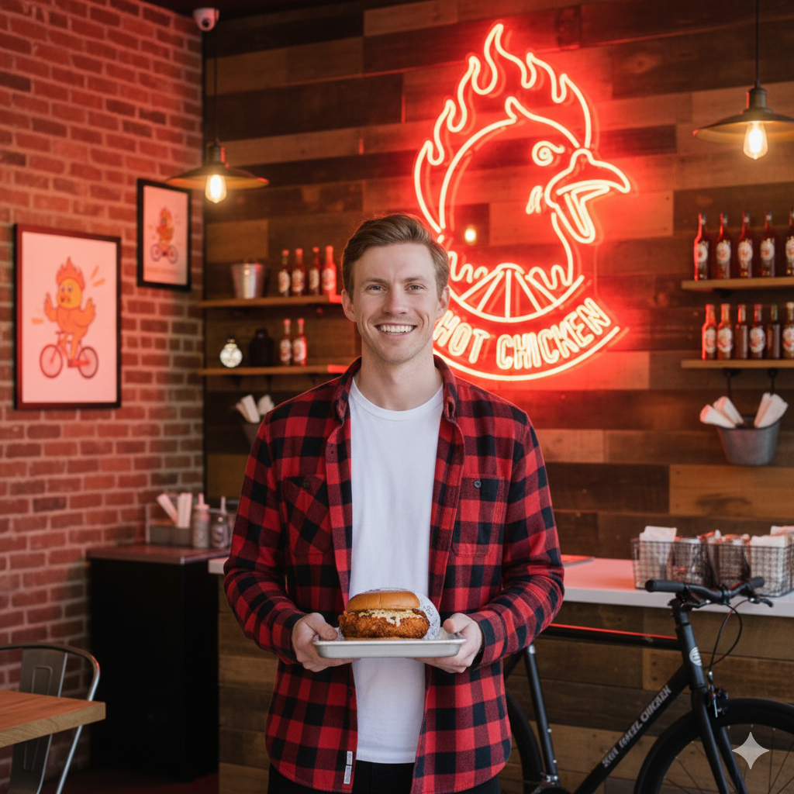

In the heart of every great story is a passion, and for Hot Wheel Chicken, that passion was born in my kitchen. I've always loved the sizzle and spice of Nashville hot chicken, and there was nothing I enjoyed more than sharing my fiery creations with friends and family. Their smiles, the satisfied sighs, and the requests for "just one more piece" fueled a dream that began to simmer.
But before the chicken took center stage, there was another love in my life: bicycles. The freedom of the open road, the wind in my hair, the rhythmic whir of the wheels – it was more than just a hobby; it was a way of life. I spent countless hours exploring, finding hidden gems in the city, and dreaming up new recipes. One day, as I was pedaling home after a particularly exhilarating ride, a thought struck me: why not combine my two passions?
The idea of "Hot Wheel Chicken" was born! It was a playful nod to my love for bikes and the scorching, delicious chicken I couldn't get enough of. I imagined a place where people could come together, enjoy incredible food, and feel the same sense of joy and adventure I found on my bike.
From those humble beginnings, perfecting recipes and building a brand, Hot Wheel Chicken has become a reality. We're dedicated to bringing you the most authentic, flavorful Nashville hot chicken, crafted with care and a whole lot of love. Every sandwich, every tender, every fry is a testament to that initial spark of passion. So, come on in, pull up a chair, and experience the flavor that's been years in the making. We promise a ride for your taste buds you won't soon forget!
